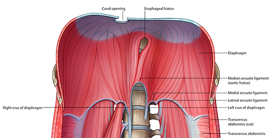

Posterior Viscera - Retroperitoneum: Page 4 of 7
| Rotate the cadaver so you can see the inferior (caudal) side of the diaphragm. | |
| Identify the caval hiatus, or opening. |
What is the thoracic level of this opening? |
|
|
T 8 (T VIII) |
|
What anatomical components pass through this opening? |
|
|
Inferior vena cava, right phrenic nerve. |
|